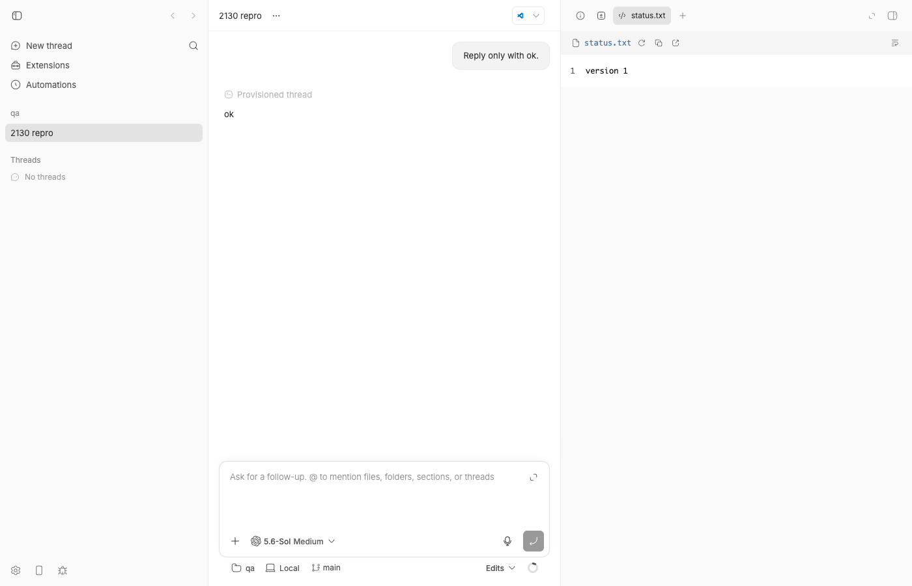
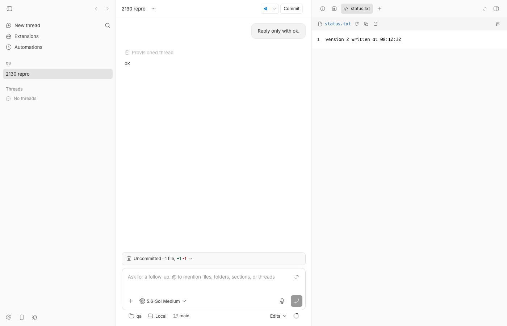
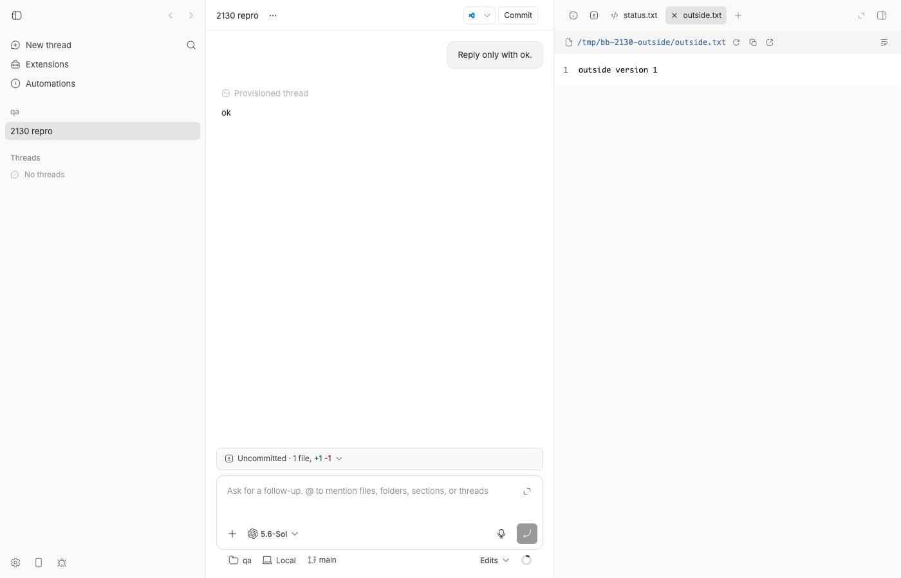
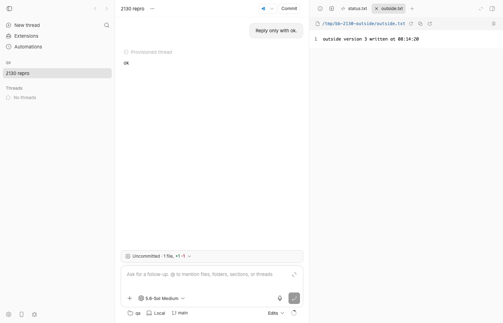
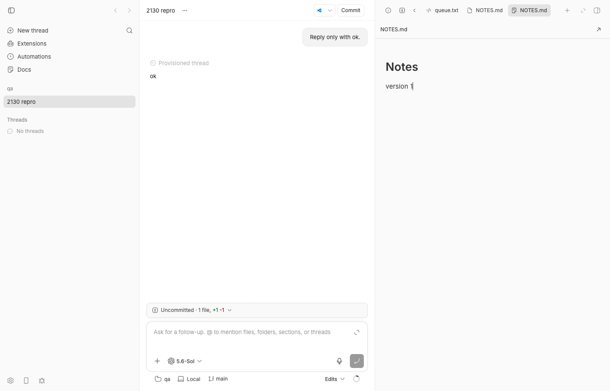
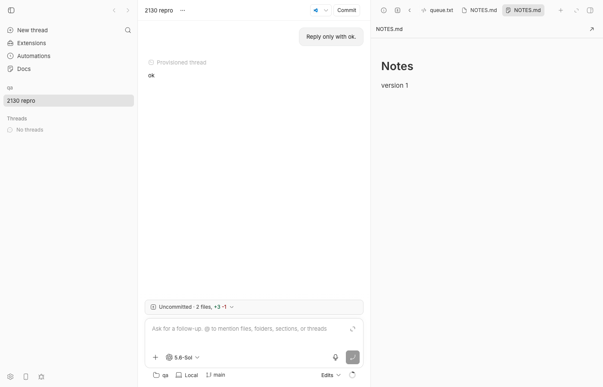
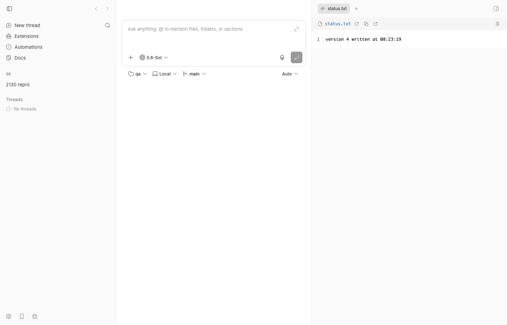

#2130 · Open file views do not refresh when a file changes on disk
Verdict: PARTIALLY REPRODUCED · Root-cause confidence: high
Partially, because the issue bundles five "surfaces" and two of them are wrong: workspace files and thread-storage files opened in a thread do refresh live (host-daemon file watcher → realtime invalidation, measured ≤5 s, no focus change needed). The real gaps are: (a) the Docs plugin markdown editor, which becomes the default opener for every .md the moment the Docs plugin is installed and never re-reads the file; (b) absolute host paths outside the workspace opened in a thread, which only refresh on a browser visibilitychange; (c) the project file preview on the "New thread" view, which never refreshes at all (not listed in the issue); and (d) the host-scoped preview used by plugin pages, which has no invalidation and a 30 s stale window (code-verified, unit-tested, not reachable from any built-in UI without a plugin that opens host targets).
1. TL;DR
bb shows files in a right-hand panel. Whether that panel tracks the file on disk depends entirely on which React Query hook the tab happens to use, and that is decided by where the file lives and which view you opened it from. Files inside the thread's workspace and inside thread storage are wired to the host daemon's filesystem watcher: an outside write arrives as a work-status-changed / thread-storage-changed realtime event and the preview refetches within a few seconds (verified live). Three other previews have no such owner: the threadHostFilePreview query (absolute paths outside the workspace) refetches only when the browser tab is hidden and shown again; the projectFilePreview query (the "New thread" page) and the hostFilePreview query (plugin pages) are never invalidated and do not refetch on focus, so they stay stale until the tab is closed or the Refresh button is clicked. Separately, the Docs plugin registers itself as the file opener for md/mdx/markdown; its DocsFileOpener reads the file once in a useEffect, keeps it in component state, and has no poll, watcher, subscription, focus handler or Refresh button, so installing the Docs plugin silently turns every live markdown preview into a frozen one. Its unmount autosave also swallows a conflict result because the only handler is setConflict on an already-unmounted component.
2. Claims vs findings
| Claim from the issue | Status | Evidence |
|---|---|---|
| "A file opened in BB keeps showing its old contents after something else writes it ... The view stays stale for as long as it is open." | Partially verified | True for the Docs editor, for absolute host paths in a thread (until a visibility change), for the New-thread project preview, and for plugin-page host previews. False for workspace files and thread-storage files opened in a thread: both refreshed within 3–5 s in the live repro (§4 steps 3 and 6). |
Surface 1: useHostFilePreview — nothing invalidates hostFilePreviewQueryKey; 30 s staleTime makes close/reopen replay the cache. | Verified | apps/app/src/hooks/queries/host-file-preview-query.ts:140-143 sets staleTime: 30_000; grep -rn hostFilePreviewQueryKey apps/app/src finds only the hook and the key factory — no invalidateQueries. Unit test useHostFilePreview in §4 fails on main. Only consumer is HostScopedFilePreviewTabContent:481-494, rendered from PluginPanelRightPanelHost:721-728 (plugin full-page routes). No built-in plugin opens a {kind:"host"} target today, so this was not reproduced live. |
Surface 2: "Built-in preview, workspace paths — RESUME_REFETCH_QUERY_POLICY. Refetches on focus ... never updates while you sit and watch it." | Refuted (mislabeled) | Workspace paths in a thread use useEnvironmentFilePreview:250-300 (EXPENSIVE_MANUAL_QUERY_POLICY), whose key is invalidated by dirtyEnvironmentLiveWorkspaceStateQueries:1101-1116 on every work-status-changed event, which the daemon emits from its parcel watcher on any content change (apps/host-daemon/src/watch-manager.ts:324-333). Live: status.txt updated in ≤3 s with the window untouched (figures 1–2). The hook that actually has RESUME_REFETCH_QUERY_POLICY is useThreadHostFilePreview:877-900 — absolute paths outside the workspace — and for that one the described behaviour (stale until a visibility change) is verified (figures 3–4, §4 step 4). |
| Surface 3: thread-storage paths — "no realtime event invalidates a file preview key. Reopening the tab works; focus does not." | Refuted | dirtyThreadStorageQueriesForThread:995-1013 and dirtyThreadStorageQueriesForEnvironment:1174-1184 both return threadStorageFilePreviewQueryKeyPrefix; they run on environment-changed and thread-storage-changed, the latter produced by the daemon's thread-storage watcher (packages/host-watcher/src/parcel-host-watcher.ts:77-100). Live: queue.txt in thread storage updated in ≤5 s (§4 step 6). |
Surface 4: Docs plugin opener loads once via openFile in a useEffect; only reload path is the reloadNonce behind the conflict banner, which only appears when a save fails its sha256 check. | Verified | plugins/docs/app.tsx:1112-1136 (single fetch keyed on reloadNonce), plugins/docs/app.tsx:1139-1171 (setConflict(true) only on saveOpenedFile conflict), plugins/docs/app.tsx:1218-1232 (banner + Reload). Live: NOTES.md stale after 30 s and after a visibility cycle (figures 5–6). Unit test fails on main. Docs registers extensions: ["md","mdx","markdown"] at plugins/docs/app.tsx:2205-2210 and became the default opener immediately after bb plugin install builtin:docs. |
"refetchOnWindowFocus is not window focus": focusManager is rewired to visibilitychange/pageshow; app-switching on macOS leaves the document visible, so no refetch. | Verified (by code) | apps/app/src/lib/query-client.ts:34-47. The window.focus listener at apps/app/src/lib/query-client.ts:76-91 only resumes suspended fetches; it does not call focusManager. Not exercised on real macOS app switching (headless run); the live repro used a genuine tab hide/show, which is the only trigger that works. |
Related: unmount cleanup calls non-forced save(); a conflict calls setConflict on an unmounted component, so edits inside the 700 ms debounce are neither written nor reported. | Verified | plugins/docs/app.tsx:1178-1183. Unit test 2 in §4: after typing and unmounting at +150 ms the rpc log is exactly ["openFile","saveOpenedFile"] with expectedSha256: "sha-1"; the mocked conflict produces no further call and no UI. |
Workarounds: close/reopen; built-in Refresh button; "Open with" per tab; Settings → File openers; local refetchInterval patch. | Verified | Refresh icon visible in every built-in preview screenshot; Docs editor toolbar has only "Open file externally" (figure 5). FileOpenersSettingsSection.tsx and ExperimentalFileLinkMenu.tsx ("Open with") exist. The patch was not evaluated. |
| Not in the issue: the "New thread" (root compose) project file preview. | New finding | useProjectFilePreview:197-256 uses EXPENSIVE_MANUAL_QUERY_POLICY (refetchOnWindowFocus: false) and projectFilePreviewQueryKey is referenced nowhere in the realtime registry. Live: stale after 30 s and after a visibility cycle (figures 7–8); unit test fails on main. |
3. Environment
- bb
fcada5a3b88302acb9944aa74b11db4ecaa215a0(main, 2026-08-21);git log fcada5a3b..origin/maintouches none of the files above (only #2147, #2150), so the findings hold on origin/main. - macOS 26.5.2 (Darwin 25.5.0), Node v22.23.1, pnpm 9.15.0, codex-cli 0.149.0 (one "Reply only with ok." turn to provision the thread).
- Own dev instance via
scripts/bb-dev-app current: apphttp://localhost:15170, server:23170, host daemon:31170, data dir~/.bb-dev/bb-machines-HOST.getbb.app-checkouts-bb-.claude-worktrees-wf_21e66a79-f02-5-4b69f8ca9065(deleted at cleanup). - Browser: headless Chrome driven by
doobiein a dedicated profile (-b bb2130) so no other page could changedocument.visibilityState. (A first attempt in the shared profile produced spurious refreshes because other agents' pages toggled visibility; those runs were discarded.) - Project
proj_sy4khgnq6z("qa") →/tmp/bb-2130-repo(git, filesstatus.txt,NOTES.md); threadthr_qdnvnfqkvh, environmentenv_idq63bcwvv(unmanaged, branch main).
4. Minimal reproduction
All timed checks below read the rendered text straight out of the DOM (read-preview-text.js) so that nothing touches focus; screenshots were taken afterwards.
- Start a dev instance and create a scratch repo + project:
scripts/bb-dev-app current # prints App/Server/Host daemon URLs mkdir /tmp/bb-2130-repo && cd /tmp/bb-2130-repo && git init -q printf '# Notes\n\nversion 1\n' > NOTES.md; printf 'version 1\n' > status.txt git add -A && git commit -qm init curl -s -X POST $BB_SERVER_URL/api/v1/projects -H 'content-type: application/json' \ -d '{"name":"qa","source":{"type":"local_path","path":"/tmp/bb-2130-repo","hostId":"<host id from bb machine list>"}}' pnpm bb:dev thread spawn --project <proj id> --environment /tmp/bb-2130-repo --provider codex \ --permission-mode accept-edits --title "2130 repro" --prompt "Reply only with ok." --json - Open the thread in the browser (
/projects/<proj>/threads/<thr>) and open a workspace file in the panel:pnpm bb:dev thread open <thr> status.txt --json # -> persisted tab kind "workspace-file-preview" (pnpm bb:dev thread tabs show <thr>)
- Workspace file: refreshes live (claim refuted). With the window untouched:
$ echo "version 3 written at $(date +%T)" > /tmp/bb-2130-repo/status.txt # 08:16:25 $ sleep 3; doobie --headless -b bb2130 run read-preview-text.js "visibility": "visible", "codeView": ["1version 3 written at 08:16:25..."] # time 08:16:31 expected: view shows the new contents actual: same (PASS, ~3 s)

Fig 1 — status.txt(workspace-file-preview) showing "version 1".
Fig 2 — six seconds after echo ... > status.txt, no focus change: the view already shows "version 2 written at 08:12:32" and the composer's Uncommitted pill appeared — the watcher →work-status-changedpath works. - Absolute host path outside the workspace: stale until a visibility change.
bb thread openrefuses paths outside the workspace, so the tab was persisted directly (this is the tab a timeline link to/tmp/...creates):pnpm bb:dev thread tabs set <thr> --expected-revision <n> --tabs-json '[..., {"environmentId":"env_idq63bcwvv","hostId":null, "id":"host-file-preview:/tmp/bb-2130-outside/outside.txt:env_idq63bcwvv","kind":"host-file-preview","lineRange":null, "path":"/tmp/bb-2130-outside/outside.txt","threadId":"thr_qdnvnfqkvh"}]' # activate the tab, then: $ echo "outside version 4 written at $(date +%T)" > /tmp/bb-2130-outside/outside.txt # 08:16:56 $ sleep 10; read-preview-text.js -> "1outside version 3 written at 08:14:20" (08:17:10) $ sleep 20; read-preview-text.js -> "1outside version 3 written at 08:14:20" (08:17:30) <- stale after 34 s $ hide-then-show.js -> {{ whileAway: "hidden", now: "visible" }} $ read-preview-text.js -> "1outside version 4 written at 08:16:56" (08:17:56) <- only a visibilitychange refreshes it expected: updates while visible actual: frozen until the tab is hidden and shown again
Fig 3 — the same tab right after it was opened (earlier run, shared profile): "outside version 1". 
Fig 4 — /tmp/bb-2130-outside/outside.txt(host-file-preview,useThreadHostFilePreview) still shows "outside version 3 written at 08:14:20" while the file on disk already says version 4 (08:16:56). - Confirm which query each tab uses (dumped from the live React Query cache with
list-preview-queries.js;refetchOnWindowFocus: falseon the workspace entry is fine because the realtime registry owns it):["threadHostFilePreview","thr_qdnvnfqkvh","env_idq63bcwvv","/tmp/bb-2130-outside/outside.txt"] observers 0 ["threadStorageFilePreview","thr_qdnvnfqkvh","queue.txt"] observers 0 ["environmentFilePreview","env_idq63bcwvv","status.txt",{"kind":"working-tree"}] observers 1 staleTime 2000 refetchOnWindowFocus false - Thread-storage file: refreshes live (claim refuted).
$ echo "storage version 1 ..." > <data dir>/thread-storage/thr_qdnvnfqkvh/queue.txt # persist a {"kind":"thread-storage-file-preview","path":"queue.txt",...} tab as in step 4, activate it $ echo "storage version 2 written at $(date +%T)" > .../queue.txt # 08:18:42 $ sleep 5; read-preview-text.js -> "1storage version 2 written at 08:18:42" (08:18:50) PASS - Docs plugin editor: never refreshes.
pnpm bb:dev plugin install builtin:docs --yes # reload the page, then pnpm bb:dev thread open <thr> NOTES.md --json # -> tab kind "plugin-panel", pluginId "simple-notes" (Docs is now the default .md opener) $ echo "version 2 written at $(date +%T)" >> /tmp/bb-2130-repo/NOTES.md # 08:20:05 $ sleep 10; read-preview-text.js -> docsEditor: "Notes version 1", changedOnDiskBanner: false (08:20:19) $ sleep 20; read-preview-text.js -> docsEditor: "Notes version 1", changedOnDiskBanner: false (08:20:39) $ hide-then-show.js; read-preview-text.js -> "Notes version 1", banner false (08:20:49) expected: editor shows the appended heading, or a "Changed on disk." banner actual: still "version 1"; no banner; no Refresh control (the git pill in the composer did update to "2 files")

Fig 5 — NOTES.mdopened by the Docs plugin (book icon on the active tab). Toolbar has only the path and "Open file externally"; no Refresh.
Fig 6 — 45 s after appending "## Agent update / version 2 ..." on disk and one hide/show cycle: editor still says "version 1". Note the composer's "Uncommitted · 2 files" pill did update — the realtime event arrived, the Docs editor just ignores it. - "New thread" view project preview: never refreshes (not in the issue). Go to
/, pick project "qa", open the right panel,⌘Psearch "status" and openstatus.txt. Cache entry:["projectFilePreview","proj_sy4khgnq6z",null,"host_fqcic7dtdr","status.txt"] staleTime 2000 refetchOnWindowFocus false.$ echo "version 5 written at $(date +%T)" > /tmp/bb-2130-repo/status.txt # 08:30:53 $ sleep 20; hide-then-show.js; read-preview-text.js -> "1version 4 written at 08:23:19" (08:31:23) expected: version 5 actual: version 4, even after a visibility cycle
Fig 7 — New-thread view, project "qa", status.txtshowing version 4.
Fig 8 — 30 s after writing version 5 plus a hide/show cycle: still version 4.
Unit-level repros
Two vitest files; four assertions fail on fcada5a3b (one control passes, proving the focus simulation works). Saved under 2130/repro/ with a README.
apps/app/src/hooks/queries/issue-2130-stale-file-preview.repro.test.tsx — run with cd apps/app && pnpm exec vitest run src/hooks/queries/issue-2130-stale-file-preview.repro.test.tsx:
// @vitest-environment jsdom
//
// Repro for get-bb/bb#2130: built-in file previews that have no refresh owner.
//
// Each test mounts one of the preview hooks against a mocked SDK, lets it load
// "version 1", then changes what the SDK would return ("version 2") to stand in
// for an outside write to the file. It then exercises every refresh trigger the
// app wires for that hook and asserts the hook refetched. On main the
// assertions marked FAILS ON MAIN fail, which is the bug.
import { act, cleanup, renderHook, waitFor } from "@testing-library/react";
import { focusManager } from "@tanstack/react-query";
import { afterEach, describe, expect, it, vi } from "vitest";
import { createQueryClientTestHarness } from "@/test/queryClientTestHarness";
import { useHostFilePreview } from "./host-file-preview-query";
import { useProjectFilePreview } from "./project-queries";
const filesSdk = vi.hoisted(() => ({
createPreview: vi.fn(),
read: vi.fn(),
}));
const projectsSdk = vi.hoisted(() => ({
fileContent: vi.fn(),
}));
vi.mock("@/lib/sdk", () => ({
sdk: { files: filesSdk, projects: projectsSdk },
}));
vi.mock("@/hooks/useRealtimeSubscription", () => ({
useProjectDetailRealtimeSubscription: () => undefined,
useThreadDetailRealtimeSubscription: () => undefined,
}));
vi.mock("@/lib/api", () => ({
getThreadHostFilePreview: vi.fn(),
}));
function textRead(content: string) {
return {
path: "/tmp/queue.txt",
content,
contentEncoding: "utf8" as const,
mimeType: "text/plain",
modifiedAtMs: 1,
sha256: content,
sizeBytes: content.length,
};
}
/** Simulate the browser tab being hidden and shown again (the only "focus"
* signal the app feeds React Query; see apps/app/src/lib/query-client.ts). */
function hideAndShowWindow() {
act(() => {
focusManager.setFocused(false);
focusManager.setFocused(true);
});
act(() => {
focusManager.setFocused(undefined);
});
}
afterEach(() => {
cleanup();
vi.clearAllMocks();
vi.useRealTimers();
});
describe("issue #2130 · host-scoped preview (useHostFilePreview)", () => {
it("refetches after the file changes on disk and the window regains focus within 30s", async () => {
filesSdk.createPreview.mockResolvedValue(null);
filesSdk.read.mockResolvedValue(textRead("version 1\n"));
const { wrapper } = createQueryClientTestHarness();
const { result } = renderHook(
() => useHostFilePreview("host-1", "/tmp/queue.txt"),
{ wrapper },
);
await waitFor(() => expect(result.current.isSuccess).toBe(true));
expect(filesSdk.read).toHaveBeenCalledTimes(1);
// Outside write.
filesSdk.read.mockResolvedValue(textRead("version 2\n"));
// Trigger 1: nothing in the app invalidates hostFilePreviewQueryKey, so
// there is no realtime path to exercise. Trigger 2: focus. The hook sets
// staleTime: 30_000, so a focus within 30s is ignored.
hideAndShowWindow();
await act(() => new Promise((resolve) => setTimeout(resolve, 50)));
// FAILS ON MAIN: still one read, view still shows version 1.
expect(filesSdk.read).toHaveBeenCalledTimes(2);
await waitFor(() =>
expect(
result.current.data?.kind === "text" ? result.current.data.content : "",
).toBe("version 2\n"),
);
});
});
describe("issue #2130 · project preview on the new-thread view (useProjectFilePreview)", () => {
it("refetches after the file changes on disk and the window regains focus", async () => {
projectsSdk.fileContent.mockResolvedValue({
content: "version 1\n",
contentEncoding: "utf8",
mimeType: "text/plain",
});
const { wrapper } = createQueryClientTestHarness();
const { result } = renderHook(
() =>
useProjectFilePreview("proj_1", "status.txt", {
environmentId: null,
hostId: "host-1",
}),
{ wrapper },
);
await waitFor(() => expect(result.current.isSuccess).toBe(true));
expect(projectsSdk.fileContent).toHaveBeenCalledTimes(1);
projectsSdk.fileContent.mockResolvedValue({
content: "version 2\n",
contentEncoding: "utf8",
mimeType: "text/plain",
});
// Wait past the 2s default staleTime, then a focus cycle. The hook uses
// EXPENSIVE_MANUAL_QUERY_POLICY (refetchOnWindowFocus: false) and no
// realtime dirty function names projectFilePreviewQueryKey.
await act(() => new Promise((resolve) => setTimeout(resolve, 2_100)));
hideAndShowWindow();
await act(() => new Promise((resolve) => setTimeout(resolve, 50)));
// FAILS ON MAIN: still one fetch; the panel keeps version 1 forever.
expect(projectsSdk.fileContent).toHaveBeenCalledTimes(2);
}, 10_000);
});
// Control: the thread-scoped host preview (RESUME_REFETCH_QUERY_POLICY) does
// refetch on a focus cycle once its 2s staleTime has elapsed. This passes on
// main and proves the focus simulation above is real; it also documents that
// this surface only recovers on focus, never while the user watches it.
describe("issue #2130 · control: thread host preview refetches on focus only", () => {
it("refetches on a focus cycle after staleTime, but never without one", async () => {
const api = await import("@/lib/api");
const { useThreadHostFilePreview } = await import("./thread-queries");
const read = vi.mocked(api.getThreadHostFilePreview);
const preview = (content: string) => ({
kind: "text" as const,
content,
mimeType: "text/plain",
name: "outside.txt",
path: "/tmp/outside.txt",
url: "/tmp/outside.txt",
});
read.mockResolvedValue(preview("version 1\n"));
const { wrapper } = createQueryClientTestHarness();
const { result } = renderHook(
() => useThreadHostFilePreview("thr_1", "env_1", "/tmp/outside.txt"),
{ wrapper },
);
await waitFor(() => expect(result.current.isSuccess).toBe(true));
expect(read).toHaveBeenCalledTimes(1);
read.mockResolvedValue(preview("version 2\n"));
await act(() => new Promise((resolve) => setTimeout(resolve, 2_100)));
// No trigger yet: the view keeps version 1 no matter how long we wait.
expect(read).toHaveBeenCalledTimes(1);
hideAndShowWindow();
await waitFor(() => expect(read).toHaveBeenCalledTimes(2));
}, 10_000);
});
vitest output (app)
RUN v4.1.1 /Users/USER/.bb-machines/HOST.getbb.app/checkouts/bb/.claude/worktrees/wf_21e66a79-f02-5/apps/app
❯ src/hooks/queries/issue-2130-stale-file-preview.repro.test.tsx (3 tests | 2 failed) 4865ms
× refetches after the file changes on disk and the window regains focus within 30s 122ms
× refetches after the file changes on disk and the window regains focus 2216ms
⎯⎯⎯⎯⎯⎯⎯ Failed Tests 2 ⎯⎯⎯⎯⎯⎯⎯
FAIL src/hooks/queries/issue-2130-stale-file-preview.repro.test.tsx > issue #2130 · host-scoped preview (useHostFilePreview) > refetches after the file changes on disk and the window regains focus within 30s
AssertionError: expected "vi.fn()" to be called 2 times, but got 1 times
❯ src/hooks/queries/issue-2130-stale-file-preview.repro.test.tsx:89:27
87|
88| // FAILS ON MAIN: still one read, view still shows version 1.
89| expect(filesSdk.read).toHaveBeenCalledTimes(2);
| ^
90| await waitFor(() =>
91| expect(
⎯⎯⎯⎯⎯⎯⎯⎯⎯⎯⎯⎯⎯⎯⎯⎯⎯⎯⎯⎯⎯⎯⎯⎯[1/2]⎯
FAIL src/hooks/queries/issue-2130-stale-file-preview.repro.test.tsx > issue #2130 · project preview on the new-thread view (useProjectFilePreview) > refetches after the file changes on disk and the window regains focus
AssertionError: expected "vi.fn()" to be called 2 times, but got 1 times
❯ src/hooks/queries/issue-2130-stale-file-preview.repro.test.tsx:131:37
129|
130| // FAILS ON MAIN: still one fetch; the panel keeps version 1 forev…
131| expect(projectsSdk.fileContent).toHaveBeenCalledTimes(2);
| ^
132| }, 10_000);
133| });
⎯⎯⎯⎯⎯⎯⎯⎯⎯⎯⎯⎯⎯⎯⎯⎯⎯⎯⎯⎯⎯⎯⎯⎯[2/2]⎯
Test Files 1 failed (1)
Tests 2 failed | 1 passed (3)
Start at 08:27:18
Duration 9.54s (transform 1.15s, setup 1.31s, import 1.32s, tests 4.86s, environment 1.88s)plugins/docs/issue-2130-file-opener-stale.repro.test.tsx — run with cd plugins/docs && pnpm exec vitest run issue-2130-file-opener-stale.repro.test.tsx:
// @vitest-environment jsdom
//
// Repro for get-bb/bb#2130, surface 4: the Docs plugin's markdown file opener
// loads a file once and never re-reads it. Also covers the "Related" note in
// the issue: a conflicting save on unmount is silently dropped.
import { act, cleanup, fireEvent, waitFor } from "@testing-library/react";
import { afterEach, beforeEach, describe, expect, it, vi } from "vitest";
import { loadPluginApp, renderSlot } from "@get-bb/plugin-sdk/testing/app";
const app = await loadPluginApp(() => import("./app"));
beforeEach(() => {
Object.defineProperty(window, "matchMedia", {
writable: true,
value: vi.fn((query: string) => ({
matches: false,
media: query,
onchange: null,
addEventListener: vi.fn(),
removeEventListener: vi.fn(),
addListener: vi.fn(),
removeListener: vi.fn(),
dispatchEvent: vi.fn(),
})),
});
});
afterEach(() => {
cleanup();
vi.unstubAllGlobals();
});
const preview = {
baseUrl: "/api/v1/file-previews/lease",
expiresAtMs: Date.now() + 60_000,
};
const source = {
kind: "workspace" as const,
threadId: "thr_1",
environmentId: "env_1",
projectId: "project_1",
};
describe("issue #2130 · Docs file opener", () => {
it("re-reads or flags a file that changed on disk while the reader never typed", async () => {
// What the file on disk currently holds. The test mutates it to stand in
// for an agent/terminal writing the file while the tab is open.
let disk = { content: "# Plan\n\nversion 1", sha256: "sha-1" };
const slot = renderSlot(
app.fileOpeners[0]!,
{
path: "PLAN.md",
source,
experimental_Original: () => null,
},
{
rpc: {
openFile: () => ({ file: disk, preview, previewPath: "PLAN.md" }),
saveOpenedFile: () => ({ outcome: "written", sha256: "unused" }),
},
},
);
await slot.findByText("version 1");
expect(
slot.rpcCalls.filter((call) => call.method === "openFile"),
).toHaveLength(1);
// Outside write.
disk = { content: "# Plan\n\nversion 2", sha256: "sha-2" };
// Give the component every chance: time passes, the window is hidden and
// shown again. There is no poll, watcher, subscription, or focus handler
// in DocsFileOpener, so nothing happens.
await act(() => new Promise((resolve) => setTimeout(resolve, 1_500)));
await act(async () => {
Object.defineProperty(document, "visibilityState", {
configurable: true,
value: "hidden",
});
document.dispatchEvent(new Event("visibilitychange"));
window.dispatchEvent(new Event("blur"));
Object.defineProperty(document, "visibilityState", {
configurable: true,
value: "visible",
});
document.dispatchEvent(new Event("visibilitychange"));
window.dispatchEvent(new Event("focus"));
});
await act(() => new Promise((resolve) => setTimeout(resolve, 200)));
// FAILS ON MAIN: one openFile call, no banner, editor still says version 1.
const reRead =
slot.rpcCalls.filter((call) => call.method === "openFile").length > 1;
const banner = slot.queryByText("Changed on disk.") !== null;
expect(
reRead || banner,
`expected a re-read or a "Changed on disk." banner; got rpcCalls=${JSON.stringify(
slot.rpcCalls.map((call) => call.method),
)}, banner=${banner}, editor="${slot.container.textContent}"`,
).toBe(true);
});
it("does not silently drop an edit whose unmount save conflicts with a newer file on disk", async () => {
const slot = renderSlot(
app.fileOpeners[0]!,
{
path: "PLAN.md",
source,
experimental_Original: () => null,
},
{
rpc: {
openFile: () => ({
file: { content: "# Plan", sha256: "sha-1" },
preview,
previewPath: "PLAN.md",
}),
// The file changed on disk after it was opened, so the optimistic
// save (expectedSha256: sha-1) is rejected.
saveOpenedFile: () => ({ outcome: "conflict", sha256: "sha-2" }),
},
},
);
const body = await slot.findByText("Plan");
body.textContent = "Plan with an edit";
fireEvent.input(body);
// Let ProseMirror's DOM observer deliver the edit to the editor (well
// inside the 700ms autosave debounce), then close the tab.
await act(() => new Promise((resolve) => setTimeout(resolve, 150)));
expect(slot.rpcCalls.map((call) => call.method)).toEqual(["openFile"]);
slot.unmount();
await waitFor(() =>
expect(slot.rpcCalls.map((call) => call.method)).toEqual([
"openFile",
"saveOpenedFile",
]),
);
const save = slot.rpcCalls.find((call) => call.method === "saveOpenedFile")!;
expect(save.input).toMatchObject({
content: "# Plan with an edit",
expectedSha256: "sha-1",
});
// FAILS ON MAIN: the conflict resolves into setConflict() on an unmounted
// component. Nothing retries, nothing is persisted, nothing is reported:
// there is no follow-up rpc call and no observable signal of any kind.
await act(() => new Promise((resolve) => setTimeout(resolve, 100)));
expect(
slot.rpcCalls.length,
`expected a retry/forced save or some report after the conflict; rpc log=${JSON.stringify(
slot.rpcCalls.map((call) => call.method),
)}`,
).toBeGreaterThan(2);
});
});
vitest output (docs)
RUN v4.1.1 /Users/USER/.bb-machines/HOST.getbb.app/checkouts/bb/.claude/worktrees/wf_21e66a79-f02-5/plugins/docs
❯ bb-plugin-simple-notes issue-2130-file-opener-stale.repro.test.tsx (2 tests | 2 failed) 2045ms
× re-reads or flags a file that changed on disk while the reader never typed 1775ms
× does not silently drop an edit whose unmount save conflicts with a newer file on disk 269ms
⎯⎯⎯⎯⎯⎯⎯ Failed Tests 2 ⎯⎯⎯⎯⎯⎯⎯
FAIL bb-plugin-simple-notes issue-2130-file-opener-stale.repro.test.tsx > issue #2130 · Docs file opener > re-reads or flags a file that changed on disk while the reader never typed
AssertionError: expected a re-read or a "Changed on disk." banner; got rpcCalls=["openFile"], banner=false, editor="PLAN.mdPlanversion 1": expected false to be true // Object.is equality
- Expected
+ Received
- true
+ false
❯ issue-2130-file-opener-stale.repro.test.tsx:102:7
100| slot.rpcCalls.map((call) => call.method),
101| )}, banner=${banner}, editor="${slot.container.textContent}"`,
102| ).toBe(true);
| ^
103| });
104|
⎯⎯⎯⎯⎯⎯⎯⎯⎯⎯⎯⎯⎯⎯⎯⎯⎯⎯⎯⎯⎯⎯⎯⎯[1/2]⎯
FAIL bb-plugin-simple-notes issue-2130-file-opener-stale.repro.test.tsx > issue #2130 · Docs file opener > does not silently drop an edit whose unmount save conflicts with a newer file on disk
AssertionError: expected a retry/forced save or some report after the conflict; rpc log=["openFile","saveOpenedFile"]: expected 2 to be greater than 2
❯ issue-2130-file-opener-stale.repro.test.tsx:155:7
153| slot.rpcCalls.map((call) => call.method),
154| )}`,
155| ).toBeGreaterThan(2);
| ^
156| });
157| });
⎯⎯⎯⎯⎯⎯⎯⎯⎯⎯⎯⎯⎯⎯⎯⎯⎯⎯⎯⎯⎯⎯⎯⎯[2/2]⎯
Test Files 1 failed (1)
Tests 2 failed (2)
Start at 08:28:37
Duration 3.65s (transform 108ms, setup 0ms, import 1.02s, tests 2.04s, environment 514ms)5. Root cause
There is no single "file view"; there are five React Query hooks plus one plugin component, and only two of them have a refresh owner. The tab kind is chosen by where the path lives and which view opened it (thread view: apps/app/src/views/thread-detail/ThreadDetailView.tsx:2652-2735; New-thread view: apps/app/src/views/RootComposePanelTabContent.tsx:420-500; plugin pages: apps/app/src/components/plugin/PluginPanelRightPanelHost.tsx:710-737).
| Tab / hook | Query key | Policy | Realtime invalidation | Observed |
|---|---|---|---|---|
thread → workspace pathuseEnvironmentFilePreview | environmentFilePreview | EXPENSIVE_MANUAL (no focus) | work-status-changed → invalidate:1112-1114; event emitted by the daemon watcher on any content change | live (≤3 s) |
thread → thread-storage pathuseThreadStorageFilePreview | threadStorageFilePreview | REALTIME_OWNED_MOUNT_BASELINE | thread-storage-changed / environment-changed | live (≤5 s) |
thread → absolute path outside workspaceuseThreadHostFilePreview | threadHostFilePreview | RESUME_REFETCH (focus + reconnect, 2 s stale) | none — the daemon watches only the workspace root and the thread-storage root | stale until visibilitychange |
New-thread view → project fileuseProjectFilePreview | projectFilePreview | EXPENSIVE_MANUAL (no focus) | none (key not referenced by any dirty function) | stale forever |
plugin page → host targetuseHostFilePreview | hostFilePreview | default focus + staleTime 30_000 | none | stale; focus only after 30 s (unit test) |
any view → .md/.mdx/.markdown with Docs installedDocsFileOpener | n/a (component state) | one openFile RPC per [filePath, openerSource, reloadNonce] | none; plugin RPC is request/response | stale forever, no banner, no Refresh |
Why the live path works: the daemon's WatchManager.queueWorkspaceWatchChange:316-333 forwards every workspace-content-changed event as work-status-changed ("The filesystem event itself is sufficient evidence that live content is stale"), the server relays it via hub.notifyEnvironment (apps/server/src/internal/environment-changes.ts:36-50), and the app's registry invalidates environmentFilePreviewQueryKeyPrefix(environmentId). That was built deliberately in #620 (71de847f6, "Fix file preview refresh") and hardened in #1299 (53ff24930). The issue's surfaces 2 and 3 describe policies that are real but irrelevant, because a realtime-owned query does not need focus refetch.
Why the others do not: the watcher is scoped to the environment's workspace root and the thread-storage root; there is no watch for arbitrary host paths, so threadHostFilePreview/hostFilePreview can only rely on focus, and the app deliberately maps "focus" to visibilitychange/pageshow (apps/app/src/lib/query-client.ts:34-47). projectFilePreview is the odd one out: its backing data is a workspace (the project's default source path, often the same directory as a thread's environment), but the key carries a projectId, not an environmentId, so the environment-scoped invalidation cannot reach it, and it opted out of focus refetch as well.
Docs opener: plugins/docs/app.tsx:1112-1136 fetches in an effect keyed on [filePath, openerSource, reloadNonce, rpc] and stores the result in useState. The only writer of reloadNonce is the Reload button inside {conflict ? ... : null}, and the only writer of conflict is a saveOpenedFile response of outcome: "conflict". A reader who never edits never saves, so never learns the file moved. Because app.slots.fileOpener:2205-2210 claims the three markdown extensions, installing the (official, on-demand) Docs plugin downgrades every markdown file view from the live native preview to this component. The unmount cleanup (plugins/docs/app.tsx:1178-1183) runs a non-forced save(); a conflict there reaches setConflict(true) on an unmounted component and is dropped.
Deeper issue: the plugin SDK's file-opener contract has no way for the host to tell an opener "your file changed" (no push channel, no experimental_useLiveFile hook), and the built-in previews have no shared "refresh owner" abstraction — each hook picks a policy by hand, which is how two sibling hooks for the same on-disk directory ended up with opposite behaviour.
6. Proposed fix (first principles)
- Make
projectFilePreviewrealtime-owned. Inapps/app/src/hooks/queries/project-queries.ts:197-256resolve the project's default environment(s) and either key the preview by environment when one exists or add a dirty function in the realtime registry that mapswork-status-changedfor an environment toprojectFilePreviewQueryKeyPrefix(projectId)(the registry already hasgetCachedThreadIdsForEnvironment-style helpers). At minimum switch it toRESUME_REFETCH_QUERY_POLICY. Risk: none beyond extra refetches of a heavy payload; it already hasHEAVY_PAYLOAD_QUERY_POLICY. - Give host-path previews a watcher. The daemon already exposes policy-free
watchPathRoot(packages/host-watcher/src/host-watcher-types.ts:99-118). Add a host RPC "watch these absolute paths for this thread/session" whose change event the server relays as a new environment/thread change kind (e.g.host-file-changedwithhostId+path), and a dirty function that invalidatesthreadHostFilePreviewQueryKey/hostFilePreviewQueryKeyfor that path. This changes wire shapes, so bumpHOST_DAEMON_PROTOCOL_VERSION. Until then, the cheap mitigation isstaleTime0–2 s andrefetchOnWindowFocus: trueonuseHostFilePreview(one-line change atapps/app/src/hooks/queries/host-file-preview-query.ts:141-142), and listening towindow.focusin addition tovisibilitychangeinapps/app/src/lib/query-client.ts:34-47so a macOS app switch counts (the comment block there explains why resume catch-up was trimmed; a focus-triggered refetch of stale queries only is much cheaper than the removed invalidation wave, but verify on iOS Safari). - Plugin file openers need a change signal. Two options that do not require plugin host entrypoints: (a) the app host already receives
work-status-changedfor the opener's environment — expose it asexperimental_useFileChangeSignal(source, path)(or pass achangeTokenprop throughPluginFileOpenerProps) that bumps when the owning environment/thread-storage query would be invalidated; (b) let the opener pull: addmodifiedAtMs/sha256to theopenFileresult (already returnssha256) and haveDocsFileOpenerre-check on the signal, showing the existing "Changed on disk." banner when the editor is dirty and reloading silently when it is not. Either way the Docs opener should also render a Refresh control like the native preview. Risk: reloading replacesTiptapEditor(keyed oninitialValue), which drops cursor position; only reload whenmarkdownRef.current === savedRef.current. - Unmount save: on conflict during the cleanup save, either force-write to a sidecar / keep the content in a module-level "unsaved edits" map keyed by path and re-offer it on next open, or at least surface a toast via the SDK. Do not force-overwrite silently.
7. PR review
No open pull requests are linked to this issue.
8. Related issues
- #615 "Add refresh file functionality" (closed) — same symptom for the native markdown preview; fixed by #620 (
71de847f6), which is why workspace previews are live today. - #1299 "Fix stale file previews during slow workspace scans" — made the watcher emit
work-status-changedbefore Git fingerprinting. - #2102 "A fileOpener cannot open another file or retitle its tab" — another gap in the file-opener plugin contract.
- #1773 "Docs file opener fails tab sync because fileOpenerOwner is rejected" (closed) — history of the Docs opener tab plumbing.
9. Appendix
Commands run
pnpm install --frozen-lockfile --prefer-offline && pnpm exec turbo run build scripts/bb-dev-app current # App :15170, Server :23170, Host daemon :31170 pnpm bb:dev machine list # host_fqcic7dtdr curl -s -X POST http://localhost:23170/api/v1/projects ... # proj_sy4khgnq6z pnpm bb:dev thread spawn --project proj_sy4khgnq6z --environment /tmp/bb-2130-repo --provider codex \ --permission-mode accept-edits --title "2130 repro" --prompt "Reply only with ok." --json # thr_qdnvnfqkvh pnpm bb:dev thread wait thr_qdnvnfqkvh pnpm bb:dev thread open thr_qdnvnfqkvh status.txt --json pnpm bb:dev thread open thr_qdnvnfqkvh /tmp/bb-2130-outside/outside.txt # Error: Absolute path must be inside the target thread workspace. pnpm bb:dev thread tabs show/set thr_qdnvnfqkvh ... # added host-file-preview and thread-storage-file-preview tabs pnpm bb:dev plugin install builtin:docs --yes # simple-notes@0.2.2 running pnpm bb:dev thread open thr_qdnvnfqkvh NOTES.md --json # -> plugin-panel tab owned by simple-notes doobie --headless -b bb2130 run 2130/repro/browser/<script>.js # see README cd apps/app && pnpm exec vitest run src/hooks/queries/issue-2130-stale-file-preview.repro.test.tsx cd plugins/docs && pnpm exec vitest run issue-2130-file-opener-stale.repro.test.tsx git fetch origin main && git log --oneline fcada5a3b..origin/main # 15f21ade7 (#2147), 2ad4bfaae (#2150) only
Evidence files
logs/thread-preview-queries.json— React Query cache dump from the thread view.logs/vitest-app-previews.txt,logs/vitest-docs-opener.txt— raw test output.logs/project-create.json,logs/thread-spawn.json.repro/browser/— doobie scripts.
Things ruled out
- The watcher missing gitignored directories: a directory added to
.gitignoreafter the watcher started still refreshed (ignore list is computed once at watch start viagit status --ignored=matching; a directory ignored before start would be skipped — not tested, noted as a caveat). - Headless artefacts: the first run in the shared doobie profile showed the host-path preview "refreshing" — traced to another page being brought to front (
document.visibilityStateflipped to hidden/visible). All results above come from the isolated-b bb2130profile.